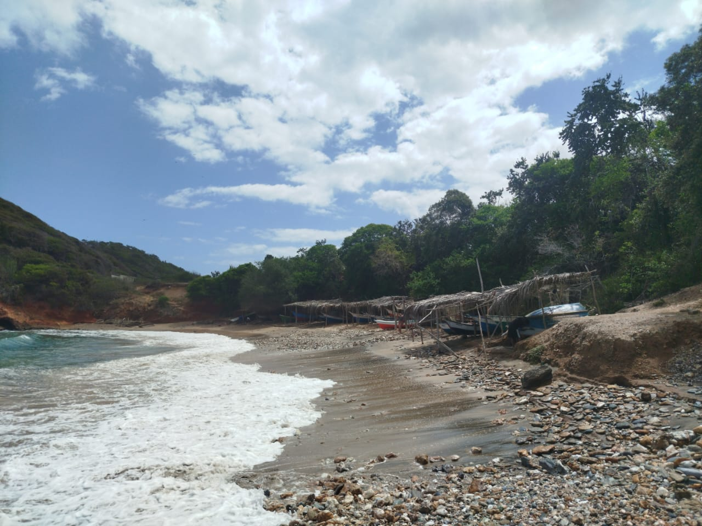
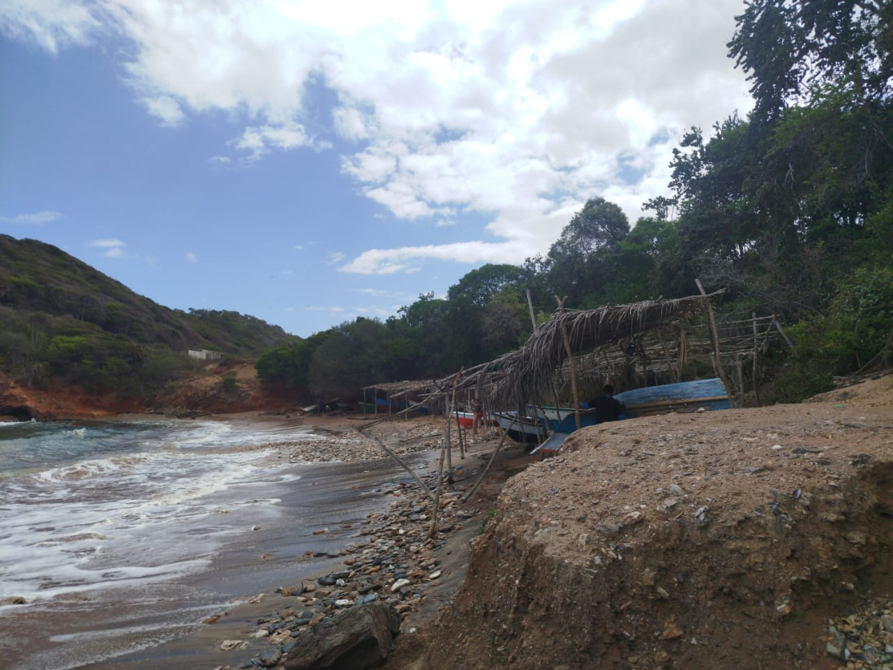
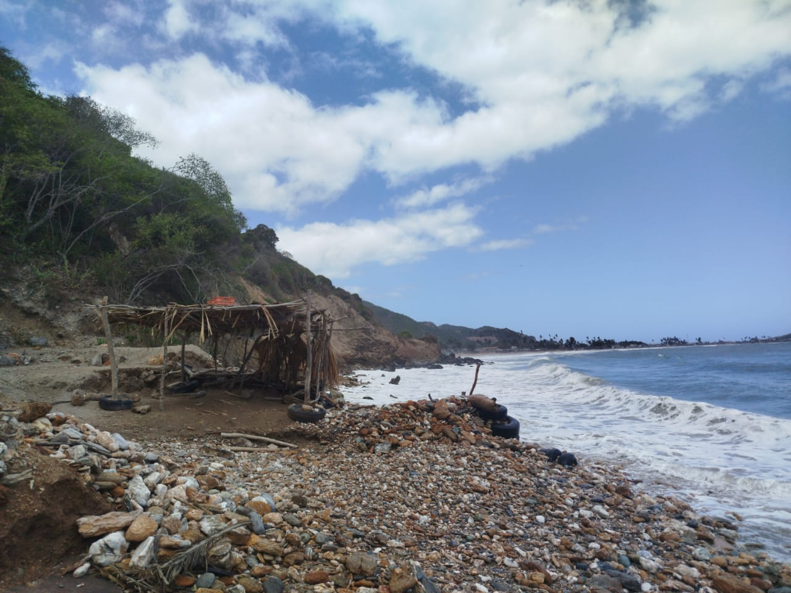
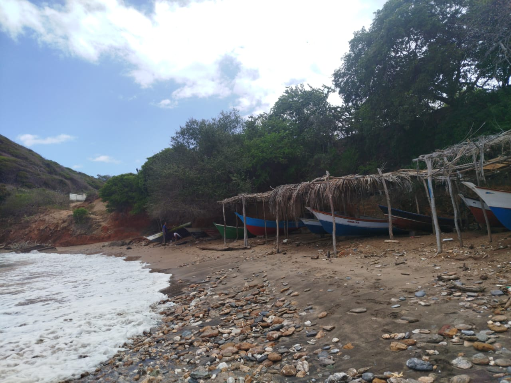
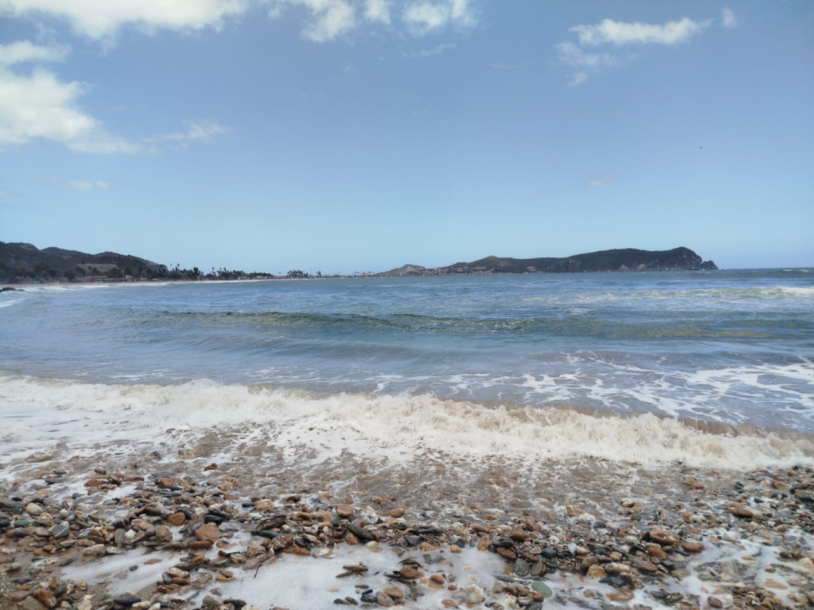

Ubicada justo en los límites entre el Morro y Cocolí, Playa La Iguana es un rincón poco transitado y de ambiente tranquilo. A diferencia de otros balnearios, aquí reina el silencio y la naturaleza virgen. Su nombre no es casualidad: la playa alberga una población importante de iguanas que se dejan ver entre la vegetación y las piedras, convirtiéndose en el principal atractivo para quienes disfrutan de observar la fauna local en su estado silvestre.




Debido a su ubicación y poca afluencia de bañistas, esta playa es una de las favoritas para los aficionados a la pesca con anzuelo. Es común encontrar a pescadores locales y visitantes apostados en la orilla buscando la captura del día. Es un lugar que requiere paciencia y conocimiento del terreno, ideal para quienes buscan una experiencia de pesca sencilla y directa desde la arena, lejos de los botes y el ruido
Cómo Llegar
Se encuentra en el limite entre El Morro y Cocoli, carretera nacional hacia Rio Caribe. Es un sendero de paso rustico y poco transitado, ideal para quienes buscan rincones naturales virgenes.
Mejores Días
Cualquier dia de la semana, preferiblemente durante el dia para el avistamiento de fauna y cuando el oleaje este calmado para la pesca de orilla.
¿Por Qué Visitarla?
Es un refugio de paz ideal para observar iguanas en su estado silvestre y practicar la pesca de orilla en soledad; ofrece un paisaje indomable y rustico perfecto para la fotografia, siempre recordando que su mar es de respeto y corrientes fuertes, no apto para nado recreativo.
La Playa de La Iguana
Es fundamental que el visitante tenga precaución al acercarse al agua. Playa La Iguana se caracteriza por tener una marejada fuerte y corrientes internas que pueden ser peligrosas. No se recomienda como una playa para el nado recreativo o para personas que no tengan experiencia en aguas abiertas. El mar aquí debe ser tratado con respeto, priorizando la seguridad y evitando alejarse de la orilla
Al ser una playa de paso entre dos sectores, su paisaje es rústico y cambiante. La mezcla de arena, zonas de piedras y el fuerte golpe del oleaje contra la costa le dan un aspecto salvaje. Es un sitio excelente para caminar y tomar fotografías de la costa indomable, siempre y cuando se mantenga la distancia necesaria del rompiente para evitar accidentes con la fuerza de las olas.
